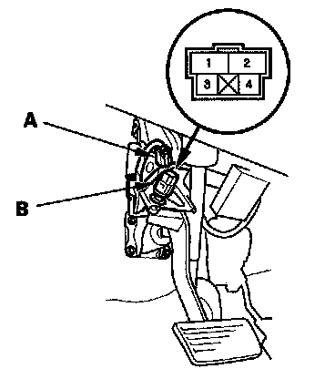

Brake Pedal Position Switch Test
Brake Pedal Position Switch Test
1. Disconnect the 4P connector (A) from the brake pedal position switch (B).
2. Check for continuity between the No. 1 and No. 2 terminals.
- There should be continuity when the brake pedal is pressed.
- There should be no continuity when the brake pedal is released.
3. Check for continuity between the No. 3 and No. 4 terminals.
- There should be no continuity when the brake pedal is pressed.
- There should be continuity when the brake pedal is released.
4. If necessary, adjust or replace the switch, or adjust the pedal height.